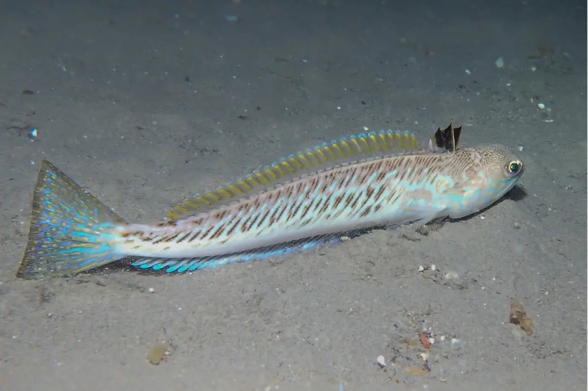
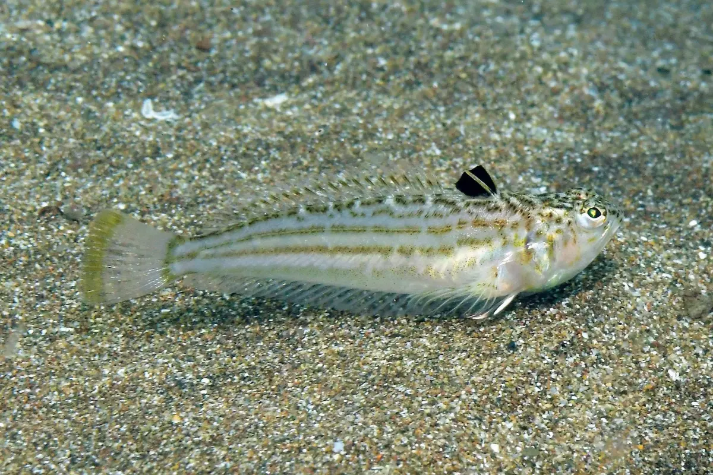
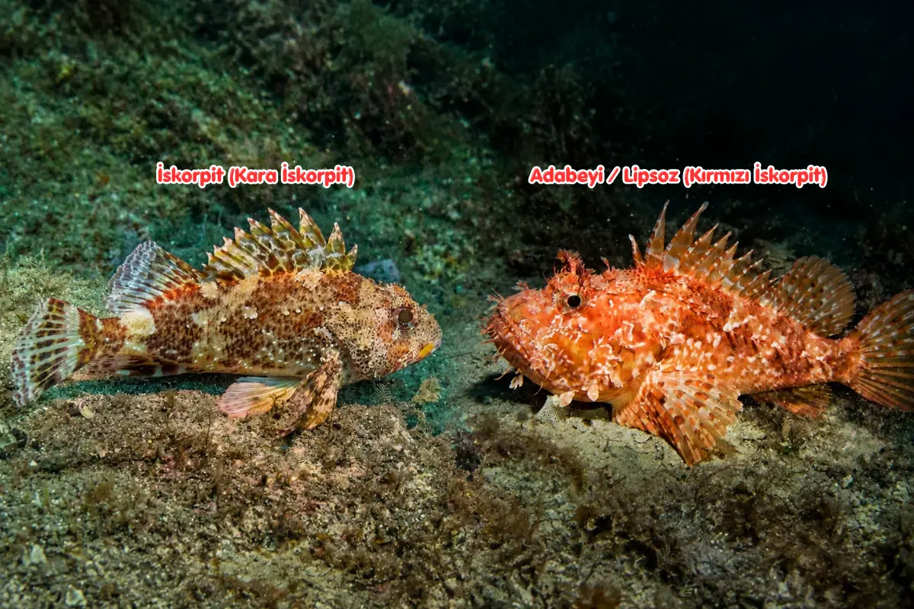
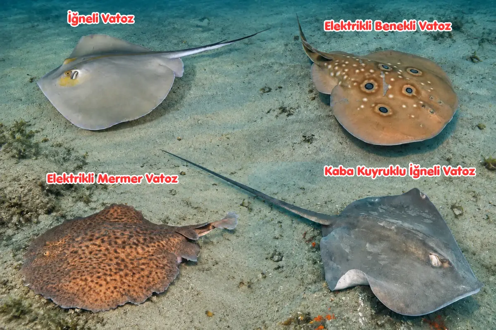
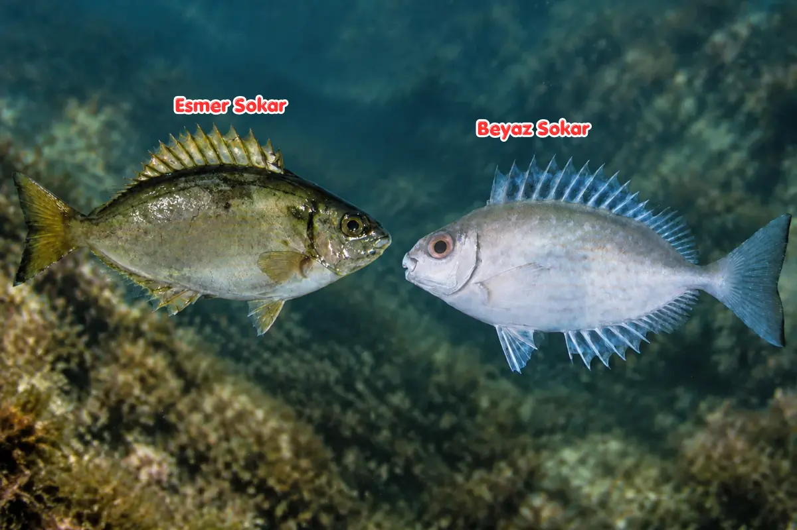
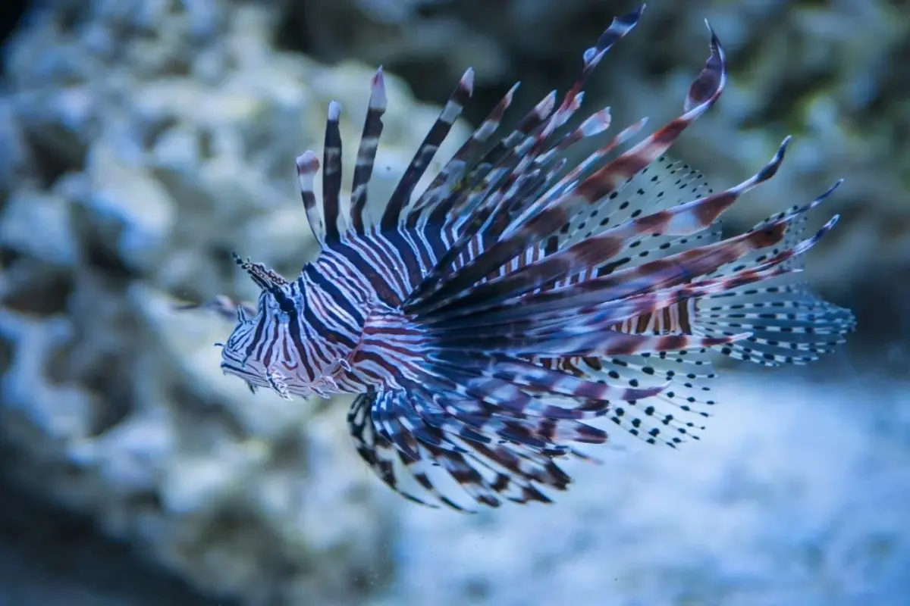
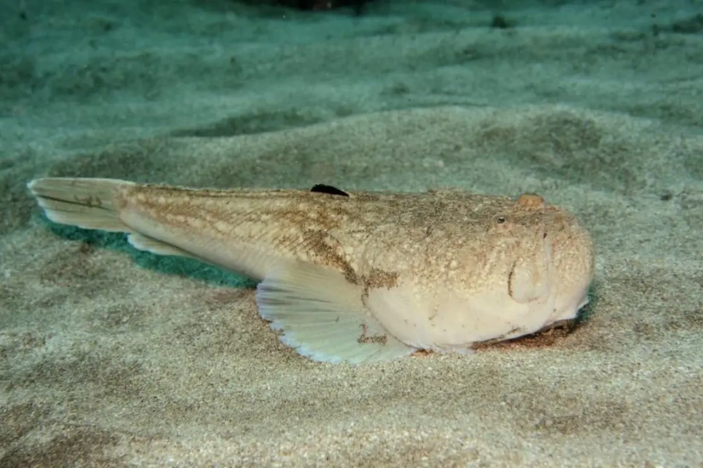
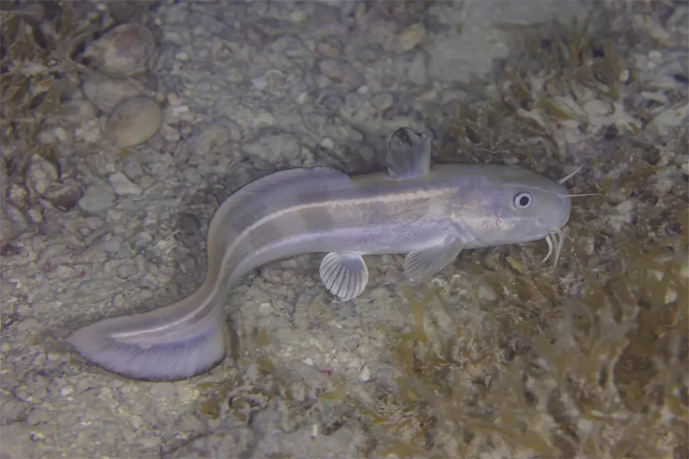
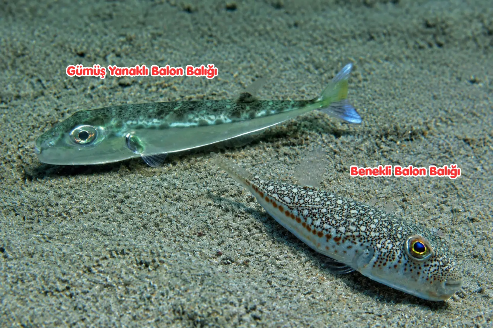

Pratik Bilgiler & Saha Araçları
Canlı mera hava-deniz analizi, ay evresi gece rengi rehberi, meraya çıkmadan önceki çanta kontrol listesi, yasal boy limitleri, tuzlu su bakımı ve zehirli balıklarda acil ilk yardım.
Canlı Mera Hava Durumu & Rüzgar Analizi
Konumunuz yalnızca siz butona bastığınızda tarayıcı üzerinde işlenir ve hiçbir sunucuda saklanmaz. İsterseniz konum izni vermeden popüler kıyı şehirlerinden birini seçerek de anlık LRF analizi alabilirsiniz.
Anlık Hava & Deniz Paneli + LRF Takım Tavsiyesi
Bulunduğunuz kıyının veya seçtiğiniz şehrin anlık rüzgar hızı, yönü, hava sıcaklığı ve dalga yüksekliği Open-Meteo üzerinden çekilir; takım gramajı ve atış tavsiyesi otomatik hesaplanır.
Analiz için butona dokunun veya listeden bir kıyı şehri seçin. Sayfa açılışında konum izni istenmez.
Mera verisi bekleniyor
Konum veya şehir analizi tamamlandığında rüzgar ve dalga şiddetine göre ideal jig head gramajı, mikro metal jig aralığı ve atış açısı tavsiyesi burada görünecektir.
Canlı Ay Evresi & Gece Sahte Rengi Rehberi
Saf astronomik sinodik döngü formülüyle cihazınızda anlık olarak hesaplanır; gece avında su altı ışık seviyesine göre Glow/UV veya Koyu Siluet stratejisini belirler.
Bugünkü Ay Evresi & Gece Silikon Rengi Hesaplayıcısı
Ay ışığının su yüzeyindeki yansımasına göre bu gece en yüksek kontrastı ve vuruş oranını sağlayacak silikon renklerini anında görün.
Önerilen Gece Renkleri
Ay evresi verisi yüklendiğinde bu gece için en yüksek kontrastı veren silikon ve jig head renk önerisi otomatik oluşturulur.
İnteraktif LRF Çanta Kontrol Listesi
Evden çıkmadan önce işaretleyerek eksik ekipmanla merada yarıda kalma riskini sıfırlayın. İşaretlediğiniz maddeler cihazınızda otomatik hatırlanır.
LRF Saha Hazırlık Listesi
Yasal Boy Limitleri & Sürdürülebilir Av
Türkiye Amatör Amaçlı Su Ürünleri Avcılığının Düzenlenmesi Hakkında Tebliğ doğrultusunda LRF'de en sık yakalanan türlerin asgari boy limitleri ve vicdani suya iade (Catch & Release) ilkeleri.
-
Asgari Boy 13 cm
İstavrit
Trachurus trachurusKıraça olarak bilinen 13 cm altındaki yavru bireyler kesinlikle alıkonulmamalı; ince iğneyle yakalandığı için zarar görmeden hızla denize bırakılmalıdır.
Günlük Limit: Tebliğ toplam 5 kg kotası dahilinde. -
Asgari Boy 25 cm
Eşkina
Sciaena umbraYavaş büyüyen ve yerel kayalıklara sadık bir türdür. 25 cm altındaki eşkinaları salmak, aynı meranın gelecek yıllardaki popülasyonunu doğrudan korur.
Günlük Limit: Kişi başı en fazla 3 adet. -
Asgari Boy 20 cm
Mırmır
Lithognathus mormyrusKumlu sığ sahillerin değerli türüdür. 20 cm altındaki mırmırlar henüz üreme olgunluğuna ulaşmadığı için ıslak elle tutulup suya iade edilmelidir.
Ölçüm: Ağız ucundan kuyruk yüzgeci sonuna kadar. -
Asgari Boy 20 cm
Çipura
Sparus aurataLidaki boyundaki 20 cm altı bireyler meranın geleceğidir. Küçük çipuraların iğneyi derine yutmaması için vuruş anında gecikmeden nazik tasma atın.
Sürdürülebilirlik: Limit üstü olsa da ihtiyaç kadar alıkoy. -
Asgari Boy 25 cm
Levrek
Dicentrarchus labraxYasal sınır 25 cm olmakla birlikte, etik LRF kültüründe 30-35 cm altındaki ispendeklerin üreme şansı bulması için suya iadesi önerilir.
İade Tüyosu: Suda solungaçlarından su geçene kadar destekle. -
Asgari Boy 18 cm
Lüfer (Çinekop / Sarıkanat)
Pomatomus saltatrix18 cm altındaki yaprak/defne bireylerinin avlanması yasaktır. Keskin dişleri nedeniyle iğneyi sökerken uzun burunlu pense kullanarak balığı hırpalamadan salın.
Vicdani Limit: 20 cm+ sarıkanat ve lüfer hedefle. -
Asgari Boy 13 cm
Barbun
Mullus surmuletusKumlu tabanda bıyıklarıyla beslenen hassas bir türdür. 13 cm altındaki yavrular pulları dökülmeden, kuru bez veya toprağa değdirilmeden suya bırakılmalıdır.
Ölçüm: Çantada 30 cm katlanır mezura bulundur. -
Catch & Release Altın Kural
Limit Altı Suya İade Kuralları
- Ellerini Islat: Kuru el balığın koruyucu mukus tabakasını sıyırır; dokunmadan önce elini deniz suyuyla ıslat.
- Kısa Süre: Balığı sudan çıkardıktan sonra 30-45 saniye içinde iğneden söküp suya geri bırak.
- Atma, Bırak: Balığı yüksekten fırlatmak yerine suya yakın eğilip yüzmeye başlayana kadar nazikçe sal.
Av Sonrası 2 Dakikalık Tuzlu Su Bakım Rutini
Deniz tuzu kuruduğunda kristalize olarak mikro rulmanları, kamış halkalarını ve ince jig head iğnelerini hızla aşındırır. Eve döndüğünüzde bu 4 kısa adımı uygulayarak takım ömrünü yıllarca uzatın.
4 Adımda Ekipman Koruma Protokolü
Her tuzlu su avından sonra uygulayacağınız 2 dakikalık tatlı su durulaması ve kontrol rutini ile korozyonu tamamen önleyin:
- Makine Durulama: Önce kalama kapağını tamamen sıkın (içeri su girmemesi için), ardından makineyi tazyiksiz soğuk/ılık musluk suyu altında 15 saniye nazikçe durulayıp yumuşak bezle kurulayın; kuruduktan sonra kalamayı gevşetin.
- Kamış Halkaları ve Ek Yerleri: Kamışın mikro kılavuz halkalarını ve makine yatağını nemli bir bezle silin; tuz kalıntısı bir sonraki avda PE örgü ipinizi zımpara gibi aşındırır.
- Jig Head ve Sahte Kutusu: Suya değen jig head, klips ve metal jigleri ayrı bir kapta tatlı sudan geçirip kağıt havlu üzerinde tamamen kuruttuktan sonra kutusuna kaldırın; ıslak tek bir iğne tüm kutuyu paslandırır.
- Lider ve Uç Kontrolü: Florokarbon liderin son 20 cm'ini parmaklarınızla yoklayın; kayaya sürtünüp pürüzleşmişse bir sonraki avı beklemeden kesip yenileyin.
Mera Güvenliği ve Gece Avı Kuralları
Hiçbir trofe balık sağlığınızdan değerli değildir. Islak kayalıklarda ve zifiri karanlıkta güvenliğinizi garanti altına alan temel saha disiplinleri.
Kıyı ve Kayalık Güvenliği
- Kaymaz Taban Ayakkabı: Yosunlu ve ıslak mendirek taşları buz kadar kaygandır. Düz tabanlı spor ayakkabı yerine derin dişli, kaymaz tabanlı outdoor/deniz ayakkabısı giyin.
- Dalga Takibi (Sırtını Denize Dönme): Dalgalı havalarda her 7-10 dalgada bir gelen "set dalgası" kıyıdaki taşları aniden aşabilir; suya arkanızı dönmeyin ve yüksek, kuru basamak seçin.
- Rüzgar ve Şimşek Kontrolü: Karbon LRF kamışları yüksek iletkendir. Gök gürültülü ve şimşekli havalarda avı derhal sonlandırıp kamışı yatay konuma indirin.
- Konum Paylaşımı: Issız kayalık meralara tek başınıza gidiyorsanız canlı konumunuzu bir yakınınızla paylaşın ve telefonunuzu su geçirmez kılıfta taşıyın.
Gece Avı ve Ekipman Güvenliği
- Kırmızı LED Kafa Lambası: Gece yürürken ve düğüm atarken Kırmızı LED modunu kullanın; hem gözünüzün karanlık adaptasyonunu bozmaz hem de sığdaki balıkları ürkütmez.
- Balıkçı Maşası & Lip Grip Zorunluluğu: Karanlıkta oltaya gelen balığın türünü net görmeden elinizi uzatmayın. Zehirli dikenlere karşı maşa ve uzun penseyi daima kemerinizde hazır tutun.
- Güvenli Atış Mesafesi: Kalabalık iskelelerde ve gece avlarında her atıştan önce arkanızı mutlaka kontrol edin; diğer avcılarla en az 3-4 metre emniyet boşluğu bırakın.
- Göz ve Baş Koruması: Takılan bir jig head'i gererek kurtarmaya çalışırken kurşun ok gibi yüzünüze fırlayabilir; kamışı yana eğip misinayı elinizle sararak kurtarın, şapka/gözlük takın.
Hayati Uyarı: Zehirli Balıklar & İlk Yardım
LRF avcılığında dip ve kıyı yapılarını tararken zehirli türlerle karşılaşmak olağandır. Tanımadığınız hiçbir balığa çıplak elle dokunmayın; iğneyi daima balıkçı maşası ve ince uçlu pense ile çıkarın.

Trakonya
Türkiye kıyılarında LRF avcılarının en dikkat etmesi gereken, 25-40 cm boya ulaşabilen kum pusucusudur. Kumlu ve çakıllı diplerde vücudunu kuma gömerek pusu kurar; dipte sürüklenen silikon ve kokulu kurtlara agresifçe saldırır. Ölü olsa dahi siyah sırt yüzgeci ve solungaç kapağındaki dikenlerde bulunan zehir saatlerce etkisini korur.
- Zehirli Diken Bölgeleri: İlk sırt yüzgecindeki simsiyah 5-7 sert diken ve her iki solungaç kapağının arkasındaki keskin zehir dikenleri.
- Saha Güvenliği: Balığı asla elinizle kavramayın; alt çenesinden veya gövdesinden maşayla tutup uzun burunlu pense ile iğneyi sökün.

Varsam (Küçük Trakonya)
Trakonya ailesinin 8-15 cm boyunda kalan, daha küçük ama zehri en şiddetli ve ağrılı olan kum türüdür. Özellikle sığ plajlarda ve kumlu kıyılarda vücudunu tamamen kuma gizler; ufak boyu nedeniyle dikkatsizce dokunma ve iğne çıkarırken ele batma riski çok daha yüksektir.
- Zehirli Diken Bölgeleri: İlk siyah sırt yüzgecindeki kısa ama son derece keskin zehir dikenleri ve her iki solungaç kapağındaki kalın zehir mahmuzları.
- Saha Güvenliği: Küçük boyutuna aldanıp kesinlikle çıplak elle yaklaşmayın; iğneyi çıkarırken balığı maşa veya lip grip ile sabitleyip uzun burunlu pense kullanın.

İskorpit
Gece kayalık ve liman içi LRF avlarında en sık oltaya gelen dip balığıdır. Kırmızımsı-kahverengi kamuflajıyla kayalara tamamen uyum sağlar. Yemi bütün olarak yuttuğu için karanlıkta iğneyi çıkarırken parmak batması en yaygın saha kazasıdır.
- Zehirli Diken Bölgeleri: Sırt yüzgeci boyunca uzanan 12 sert diken, karın ve alt yüzgeç dikenleri ile solungaç kapağındaki çıkıntılar.
- Saha Güvenliği: Gece kafa lambasını yakmadan balığa yaklaşmayın. Balığı lip grip veya balıkçı maşasıyla sabitleyip iğneyi penseyle çıkarın.

Vatoz (İğneli & Elektrikli Vatoz)
Sığ kumlu sahillerde ve liman ağızlarında dipte sürüklenen silikonlara nadir de olsa denk gelebilir. Ağır ve yassı gövdesiyle ilk anda dibe takılma hissi verir; kıyıya yaklaştığında kamçı şeklindeki kuyruğunu savunma amacıyla hızla savurur.
- Zehirli Diken Bölgeleri: Kuyruk köküne yakın üst kısımda bulunan, testere dişli ve zehirli mukusla kaplı 1 veya 2 uzun kuyruk mahmuzu.
- Saha Güvenliği: Vatozu kıyıya çıkarmak veya üzerine basmak çok tehlikelidir. Balığı suda tutup lideri iğneye en yakın noktadan keserek güvenle salmak en doğru yöntemdir.

Sokar (Sokkan)
Akdeniz ve Güney Ege'nin yosunlu kayalık meralarında sürüler halinde gezer. Küçük mikro silikonlara ve kurt taklitlerine sıklıkla atlar. Görünümü zararsız bir kefal veya sarpa yavrusunu andırdığı için dikkatsiz avcılar tarafından çıplak elle tutulma riski yüksektir.
- Zehirli Diken Bölgeleri: Sırt yüzgecindeki 13 diken, alt yüzgeçteki 7 diken ve karın yüzgeçlerindeki zehir kanallı dikenler (tüm yüzgeç çevresi tehlikelidir).
- Saha Güvenliği: Çırpınma anında yüzgeçlerini açtığı için maşa kullanmadan yaklaşılmamalıdır; diken batması şiddetli zonklama ve uyuşma yapar.

Aslan Balığı
Gösterişli, uzun ve şeritli yüzgeçleriyle tanınan, Akdeniz ve Ege kıyılarında hızla yayılan istilacı bir Kızıldeniz göçmenidir. Kayalık meralarda ve mendirek taşlarının arasında LRF silikonlarına ve mikro jiglere çok agresif saldırır; süs balığı görünümüne kesinlikle aldanılmamalıdır.
- Zehirli Diken Bölgeleri: Sırt yüzgecindeki 13 uzun dikenin yanı sıra karın (pelvik) ve anal yüzgeçlerindeki toplam 18 zehirli diken.
- Saha Güvenliği: Uzun yüzgeç dikenleri avcıya doğru kolayca eğilebilir; balığa asla çıplak elle dokunmayın, lip grip ile alt çenesinden tutup uzun penseyle iğneyi çıkarın.

Kurbağa Balığı
Gözleri başının tam tepesinde ve ağzı dikey yukarı bakan, vücudunu tamamen kuma gömüp sadece gözlerini dışarıda bırakarak pusu kuran dip balığıdır. LRF'de dipte sürünen silikonlara aniden saldırır; sırt yüzgeci ve solungaç kapağındaki kalın zehirli dikenlerin yanı sıra göz arkasında hafif elektrik organı da bulunur.
- Zehirli Diken Bölgeleri: İlk siyah sırt yüzgeci dikenleri ve solungaç kapaklarının arkasındaki iki büyük, kalın zehir mahmuzu.
- Saha Güvenliği: Balığı asla ensesinden veya baş arkasından elinizle tutmayın; lip grip ile alt çenesinden sabitleyip pense ile iğneyi çıkarın.

Çizgili Kedi Balığı
Gövdesi boyunca uzanan parlak beyaz/sarı şeritleri ve ağzındaki 4 çift bıyığıyla tanınan, sürü halinde gezen istilacı bir Kızıldeniz göçmenidir. LRF'de kokulu silikon kurtlara ve mikro yemlere sıklıkla atlar; dikenleri şiddetli ağrı ve doku hasarına yol açan güçlü zehir taşır.
- Zehirli Diken Bölgeleri: Birinci sırt yüzgecindeki testere dişli sert zehir dikeni ve her iki göğüs yüzgecindeki zehirli testere dikenleri.
- Saha Güvenliği: Küçük ve sevimli görünümüne aldanıp kesinlikle çıplak elle dokunmayın; balıkçı maşasıyla gövdesinden tutup uzun penseyle iğneyi sökün.

Hayati Uyarı: Balon Balığı
Akdeniz ve Ege kıyılarında silikon ve jiglerin kuyruğunu keserek kendini belli eden Balon Balığı, etinde, derisinde ve iç organlarında pişirmekle yok olmayan ölümcül Tetrodotoksin zehri taşır. Kesinlikle tüketilmemeli ve kedi/köpek gibi sokak hayvanlarına verilmemelidir.
Gaga & İğne Uyarısı: Papağan gagasına benzeyen keskin dişleri parmak ve kalın misinayı tek hamlede kesebilir. İğneyi çıkarırken elinizi ağzına asla yaklaştırmayın; uzun burunlu pense ve maşa kullanın.
Rastgele Değil, Bilinçle Atılan Her İp Doğaya Saygıdır.
Limit altı her yavruyu denize iade et, meranı bulduğun gibi temiz bırak ve her atışta doğayla uyumu koru.
RASTGELE!
İpin gergin, meran bereketli olsun.